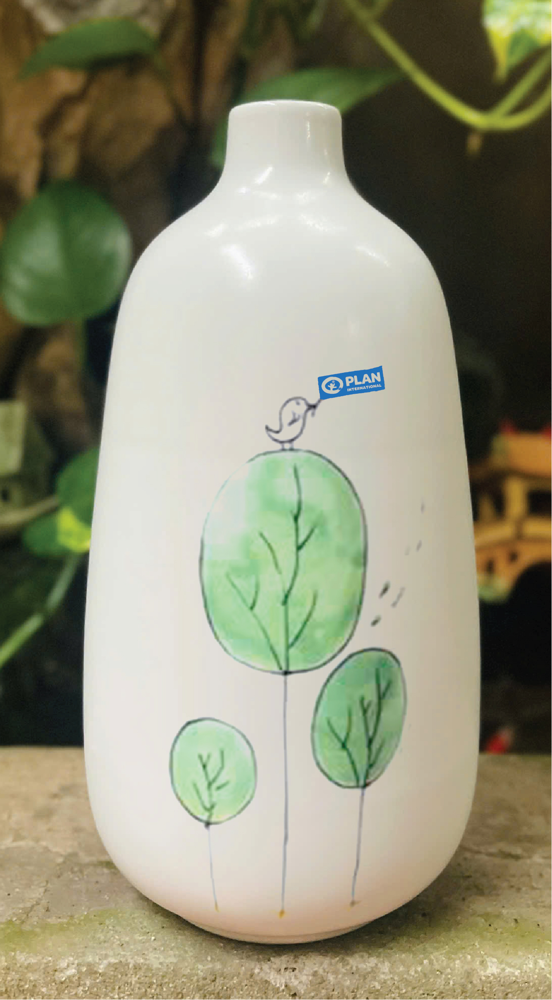
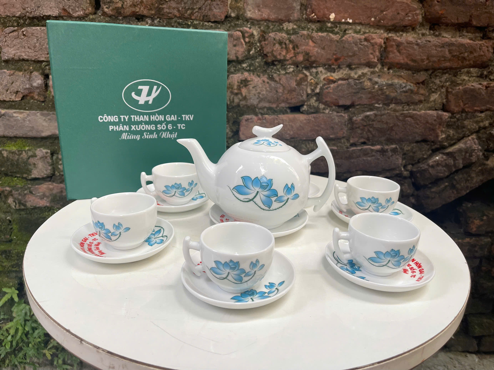
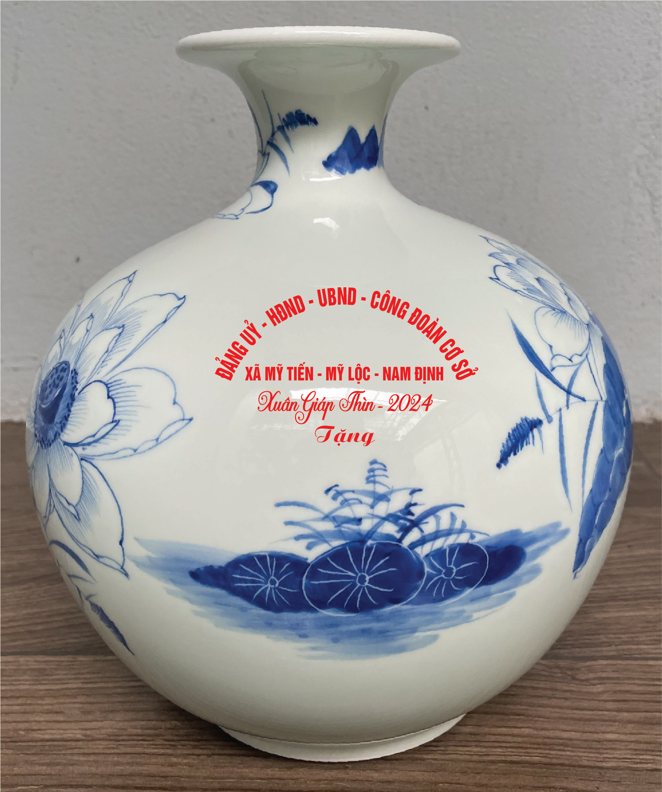

quatanggom là trang website về gốm sứ chính hãng đầu tiên và lớn nhất tại Việt Nam. Với sứ mệnh đưa sản phẩm Gốm Sứ Bát Tràng chính hãng tới tay người tiêu dùng trên toàn quốc, đưa những câu chuyện của người Việt vươn tầm ra thế giới.Cửa hàng cung cấp các sản phẩm gốm sứ chất lượng cao và giá thành rẻ nhất, từ đôi bàn tay vàng của các nghệ nhân Bát tràng , được vuốt nặn, vẽ tay vô cùng tỉ mỉ và công phu. Tiêu chí về chất lượng được đặt lên hàng đầu đặc biệt là quy trình xử lý đất, quy trình nung khử ở nhiệt độ lên tới 1300 độ C, khử tới 99% tạp chất còn tồn dư trong đất, cho xuất xưởng các sản phẩm gốm sứ sạch an toàn cho người sử dụng

Sản phẩm lọ cắm hoa gốm sứ Bát Tràng có miệng lọ khá rộng và thân lọ cao rất phù cắm nhiều loại hoa
Các mẫu lọ hoa đẹp:

Ấm chén Bát Tràng là sản phẩm gốm sứ truyền thống nổi tiếng, có nguồn gốc từ làng nghề Bát Tràng, với chất liệu đất sét tuyển chọn, men gốm cao cấp và đa dạng kiểu dáng, hoa văn

Bình Tài Lộc về phong thủy hình dáng bình Tài Lộc vừa hút có khả năng Tài Lộc lại vừa giữ Tài Lộc rất tốt, đem lại nhiều may mắn cho gia chủ.
| Size 18 | Size 22 | Size 26 | |
|---|---|---|---|
| Bình Mã Đáo | 260K | 285K | 310K |
| Bình Thuận Buồm | 270K | 295K | 330K |
| Bình Men Xanh | 330K | 365K | 395K |